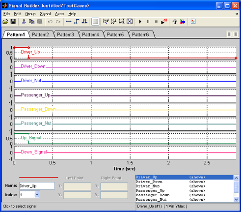

Import test vectors in Excel sheet to SignalBuilder block at once
- Supported by MATLAB R2007a or later
- Requires Simulink®.
Contents
Note
Similar functionality is provided by SignalBuilder block in Simulink with MATLAB R2010b or later version. The author of this tool highly recommend using the functionality provided by Simulink product. It is possible to back-port the SignalBuilder block created on R2010b to older version.
Link to the product document
http://www.mathworks.com/help/toolbox/simulink/ug/f15-109640.html#bskwu0h-1
Overview
(1) Open an Excel sheet which you want to import to SignalBuilder.
(2) Click Excel sheet to SignalBuilder button
(3) SignalBuilder will be produced.
In the SignalBuilder, there are imported signals.

Traceability link from SignalBuilder to Excel sheet
If Simulink Verification and Validation license is available on your MATLAB environment, a link from the group in SignalBuilder to originated Excel cell will be created automatically.
To navigate the originated range of the Excel, click "Show verification setting" button (indicated by a red square in the below figure), then right-click on the label name shown in "Requirements" pain and select "View" (indicated by green square in the below figure).

Rule for writing tests
- Row 1: Write <TV>TestVectorName at the left most cell, where the first 4 letters must be "<TV>". Following strings are treated as a group name of SignalBuilder block. The keyword "<TV>" means the beginning of a Test vector.
- Row2: Fill time, signal name 1, signal name 2, ...
- Row3: Fill datatype name for each signals (double, single, int8, uint8, int16, uint16, int32, uint32, boolean)
- Row 4: Fill time and signals at each time.
- Add the next Test vector. Blank lines or lines with strings can be included between the beginning of new Test vector and the bottom of signals.
Note
- Similar functionality is provided by SignalBuilder block in Simulink with MATLAB R2010b or later version. The author of this tool highly recommends using the functionality provided by Simulink product. It is possible to back-port the SignalBuilder block created on R2010b to older version. http://www.mathworks.com/help/toolbox/simulink/ug/f15-109640.html#bskwu0h-1
- If there is a numeric data between the end of signal data and the beginning of a new Test vector, importing procedure will fail. Only strings or blank can be acceptable between them.
- Do not include a string or a numeric data on a column other than time and signal column. This tool understands all columns that contain at least one string or numeric data.
- Currently, Data-type setting s are not reflected to SignalBuilder block. simdata variable which will be created in MATLAB Base workspace after importing data has datatype settings.
How to run
- Open cmtdtool_sampledata_en.xls file in the directory where you installed cmtdtool.
- Open "MultipleTestVectors" tab in the Excel.
- Click "Excel sheet to SignalBuilder" button in cmtdtool
- Check that signals in the Excel sheet are imported into SignalBuilder in a new model.
- Run the following commands and you will see that the same operation can be done by API call.
xls2SignalBuilder_multiple('cmtdtool_sampledata_en.xls','MultipleTestVectors',[],[]);